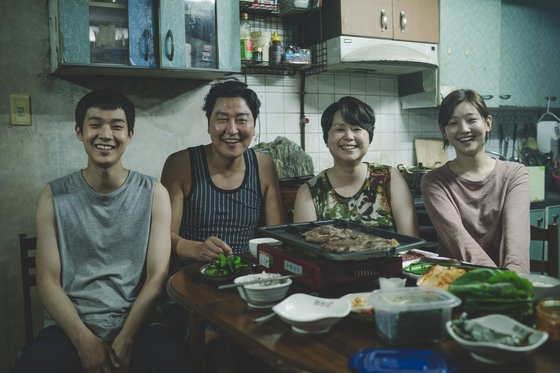
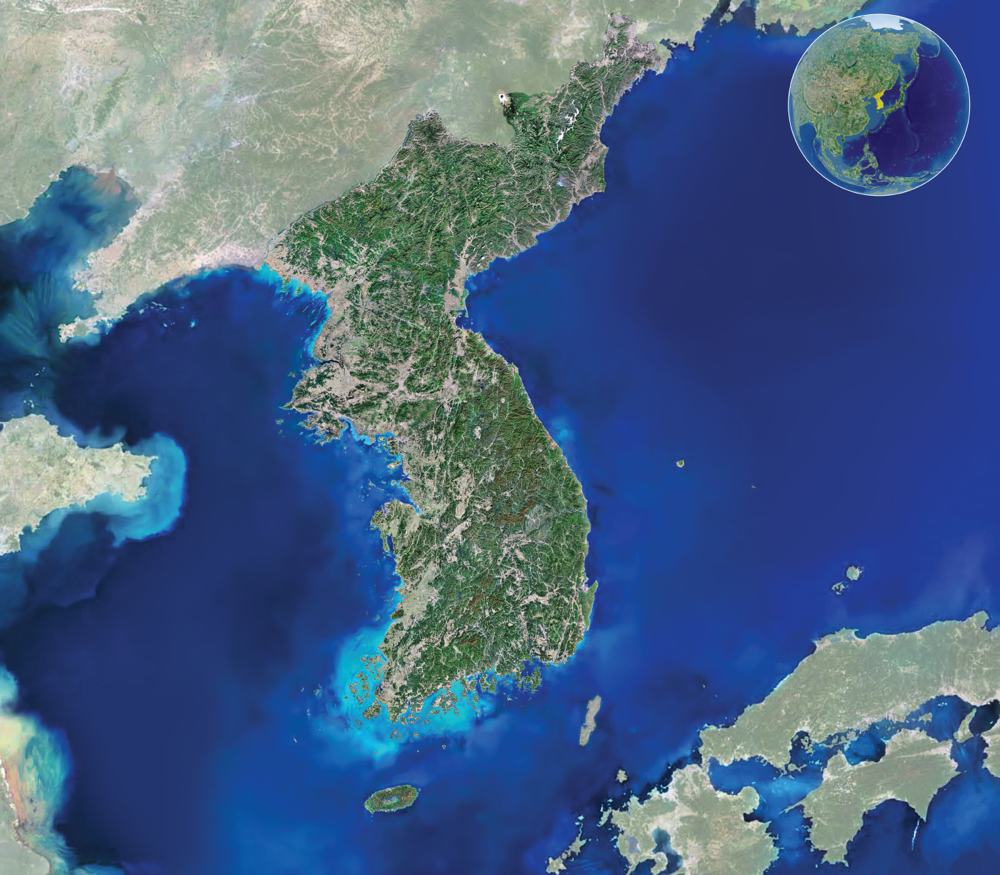
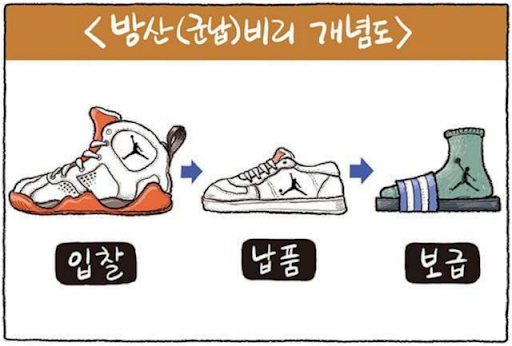
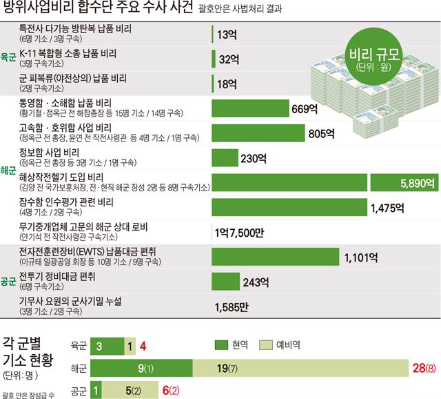

히스테리는 원래 신경증의 한 유형으로 분류된다. 히스테리성 인격장애(histrionic personality disorder)혹은 연극성 인격장애라고도 한다. 히스테리는 과시적이고 극적인 표현을 하며 주변의 시선을 받고 싶어하는 성격장애이다.
주변에서 무언가에 집착하거나 신경증적인 불안감을 떨쳐버리지 못하는 사람들을 보고 ‘히스테리 부린다’ 라는 말을 사용하는 것을 쉽게 볼 수 있다.
한국인이 가진 히스테리에는 독특한 특징이 있다.사회적 체면을 생각하여 타인을 지나치게 의식하고, 가까운 사람 사이에 과도한 경쟁심리를 가지고 있다.
좁은 공간의 지리적 배경, 긴 겨울의 자연적 배경, 가혹한 시련의 지정학적 배경, 성리학의 이념적 배경, 가족주의의 문화적 배경이 한국인 히스테리 성격 형성에 영향력을 행사했다.
성리학의 강력한 수직적 위계질서는 타인과 나의 계급적 위치를 인식하게 하여 권력 서열화를 느끼게 한다. 자신의 사회적 위치에 대해 타인과 비교를 하게 되고, 그것이 강한 서열 문화로 이어지고 계급적 위치라는 권력 관계를 통해 타인과의 경쟁 관계를 형성하게 된다. 서열은 타인을 의식하게 하고, 심리적으로 더 높은 사회적 지위를 추구하게 한다. 이것이 히스테리로 이어져 비교 히스테리로 발동한다.
조선 중기 이후 도입된 장자 중심의 종법제 가족주의는 가족 내에서 성리학의 수직적 위계질서를 구현한 것이다. 가족주의는 개인보다는 가문의 지위를 중요하게 여기고, 가문의 지위로 개인의 지위가 결정되기 때문에 가문 간에 치열한 경쟁이 일어난다. 그 경쟁에서 살아남기 위해 내부적으로 유대감을 형성한다. 가족주의는 같은 동종에서 일한다는 가족공동체적 연대감으로 비리 히스테리의 원인으로 작용한다.
우리나라는 북쪽으로는 중국과 러시아, 동쪽과 남쪽으로는 일본에 둘러쌓여 있는 지리적 요건을 가지고 있다. 이러한 지정학적 요인으로 전쟁이 연속인 역사를 겪었다. 임진왜란과 병자호란, 조선 후기의 피폐한 역사, 6·25 전쟁 등 이러한 역사적 경험은 집단적으로 공동 대응하도록 했고, 이겨야만 살 수 있다는 냉정한 승자 독식주의를 가능하게 하였다.
자신의 존재감을 보여주고 싶은 히스테리는 갑질 히스테리의 원인으로 작용한다. 갑질 히스테리의 대표적인 예로는 ‘땅콩 회항’ 사건이 있다. 이 사건은 2014년 12월 5일, 뉴욕에서 한국으로 향하는 비행기 안에서 발생했다.이륙 전 조현아 부사장은 마카다미아 서비스를 빌미로 객실 승무원을 질책하고, 사무장에게 책임을 전가하며 그의 손을 매뉴얼 모서리로 때리는 등 폭언과 폭행을 가하고 비행기의 이륙을 막으면서 회항시킨 전대미문의 사건이다.
자신의 존재를 드러내고 과시하기 위해서 히스테리를 드러내기도 하지만내면의 깊은 열등감을 감추기 위해 남보다 우위에 있는 선택받은 사람처럼 행동하는 비교 히스테리가 있다.명품, 수입 자동차, 학력 등으로 보여주는 현시욕과 과시욕은 타인과 비교를 통해 자신의 열등감을 감추려고 한다. 우리 사회에서 흔히 사용하는 엄친아, 엄친딸과 같은 단어도 타인과 비교하는 단어라고 할 수 있다. 타인의 인정을 갈망하는 히스테리적인 관심이 초래한 불편한 결과이다.
비리는 동서고금을 막론하고 일어나는 인간의 기본적인 욕망이다. 비리는 올바른 이치나 도리에서 어긋난 것을 의미하는 말인데인간은 사회적 인정이라는 존재의 충만감을 위해 올바른 이치와 도리에서 벗어나는 행동까지 하며이기적인 욕망을 끊임없이 추구한다. 조선 중기의 사치풍조, 탐학, 방산 비리, 전직 대통령들의 비리 등비리는 역사를 관통해서 우리 사회에 나타났다.
몇 십년 전부터 현재까지 계속 이어지고 있는 큰 비리 중 하나인 방위산업 비리는군대에서 필요로하는 무기나 장비를 연구 개발, 생산하는 국내 업체와 군이 결탁해 부정을 지르는 행위이다. 2015년 방산비리 합동 수사단이 수사한 결과 1조원에 가까운 규모의 어마어마한 비리가 적발되었다.
방산 비리의 원인 중 하나인 폐쇄적 계급문화에 기인한 상명하복식 의사결정과 퇴직 후의 유착관계는 가족주의 의식과 연결되어 계급적인 카르텔을 통해 군인들 간의 연대감은 서로를 보호하려는 것으로 볼 수 있다.
히스테리는 동전의 앞면과 뒷면처럼 양면성을 가지고 있다. 단점으로 작용하지만 장점으로도 작용한다.
한국인의 히스테리는 역사에서 우리 사회를 움직이는 중추 에너지로 작용해왔다. 한국인의 빨리빨리 문화의 역동적인 성격은 현대사에서 경제 기적을 일으킨 사회 에너지로 분출되었고, 한국인이 가진 히스테리는 협동성의 에너지를 내장한 잠재성이 매우 높다. 최근에 코로나19 바이러스가 퍼지면서 보여준 모습과 2016년 촛불혁명, 2007년 태안 앞바다에 기름이 오염된 최악의 순간에도전국에서 자원봉사자들이 기름 때를 닦기위해 모여든 모습을 통해서 알 수 있다.
우리가 가진 긍정적인 에너지를 잘 활용하여 다가오는 미래를 발전시키고 지혜롭게 맞이할 수 있어야겠다.
<이미지>
https://m.post.naver.com/viewer/postView.nhn?volumeNo=9846375&memberNo=25697552
https://news.joins.com/article/23489452
http://nationalatlas.ngii.go.kr/
http://www.mediaus.co.kr/news/articleView.html?idxno=46814
https://news.joins.com/article/3277838
http://www.newsreal.co.kr/news/articleView.html?idxno=420
https://www.hankookilbo.com/News/Read/201507151817842332
http://www.joseilbo.com/news/htmls/2016/09/20160923304321.html
https://www.yna.co.kr/view/AKR20171129129300063